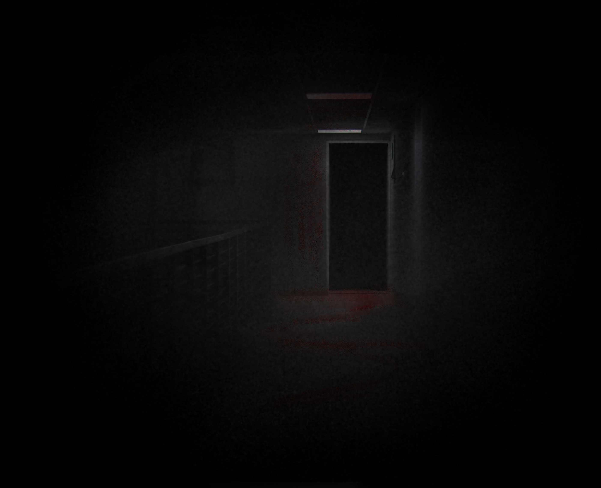

It felt like it was getting foggier and foggier the more I walked down the hall and up the creaky stairs. Until suddenly, I was also seeing more. . . red. LOOK CLOSER?  BACK
It felt like it was getting foggier and foggier the more I walked down the hall and up the creaky stairs. Until suddenly, I was also seeing more. . . red.